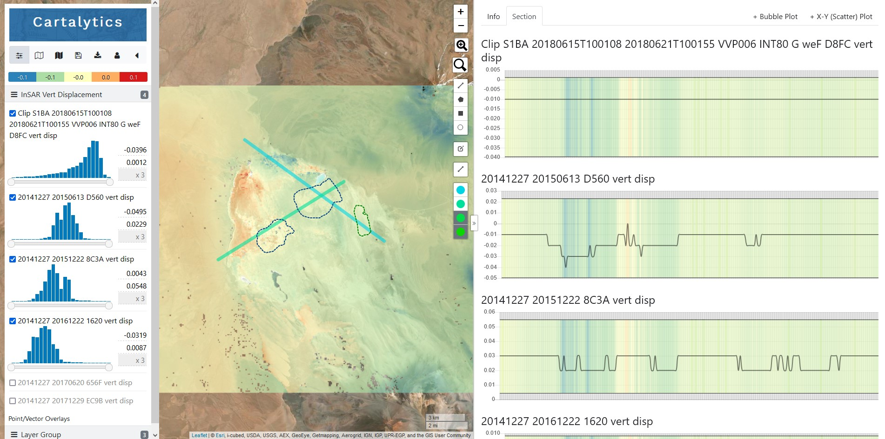

Below you will find the early framework for a digital poster I would like to create. While the series of visuals is driven by the hypothesis of salt pan surface crust formation is controlled
by seasonal moisture inputs, the main purpose of this presentation is to explore different visualization platforms found in ArcGIS "StoryMap" platform.
Different visuals are presented as you scroll down the page. Meaningful interactivity is the main goal of this "poster" via play/pause/rewind for the video, swipe for images and maps, and "build your own" data
analysis maps via the Cartalytics platform.
